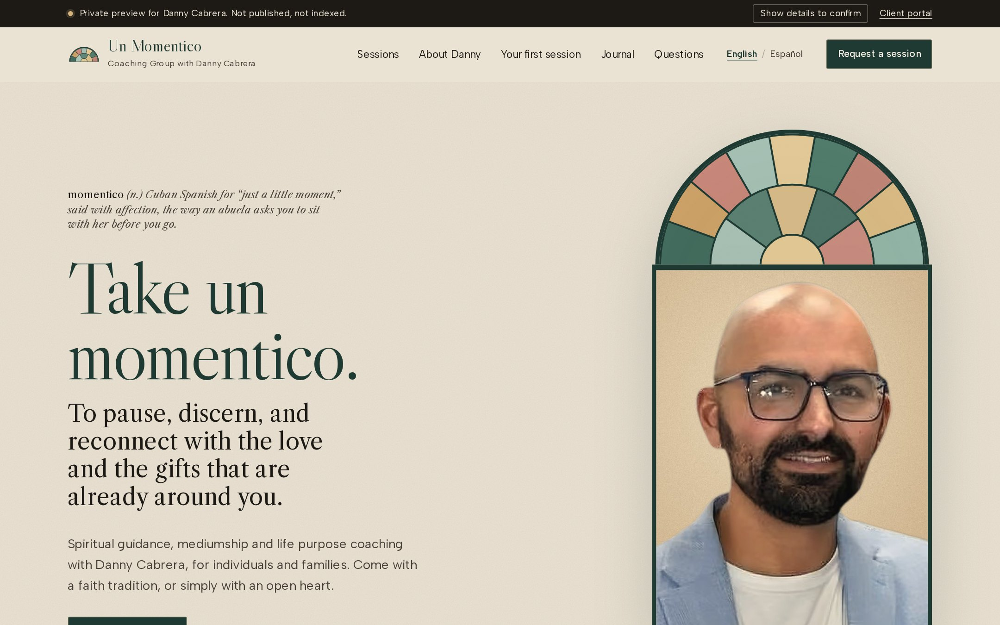
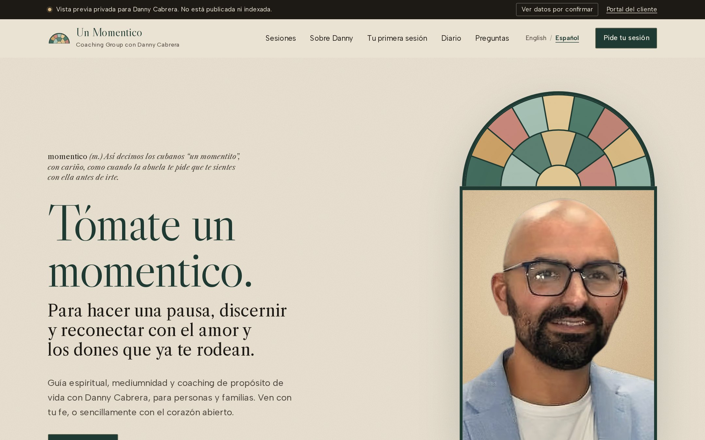
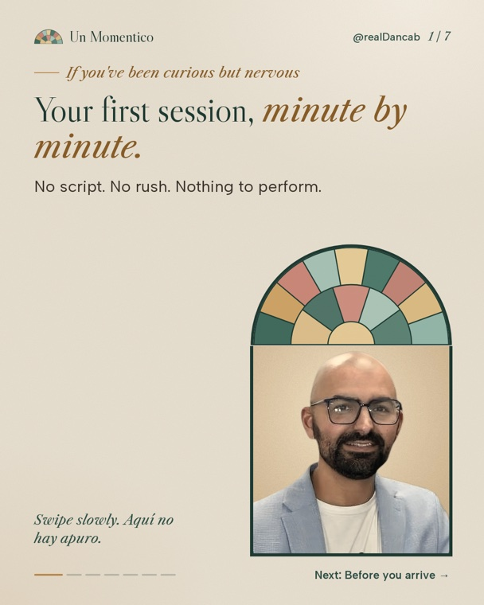
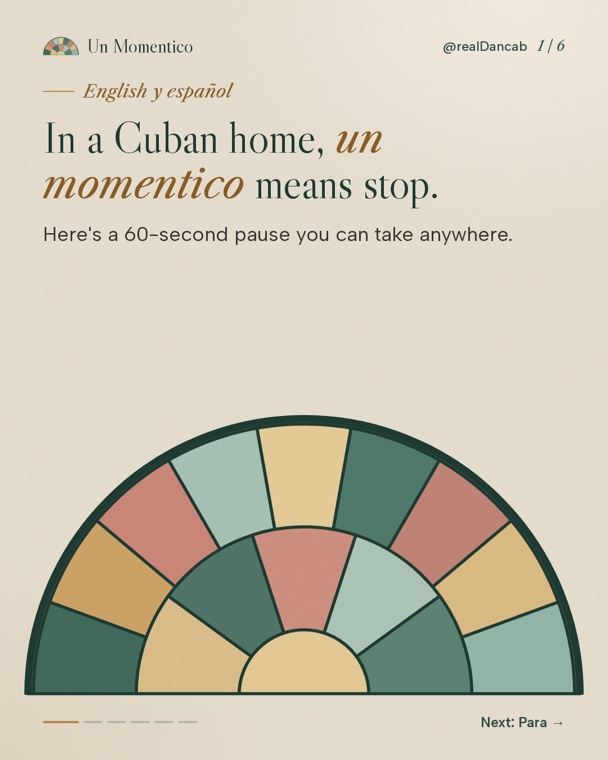

Un
Momentico
A vision for Danny Cabrera’s brand
Prepared by Gil Marketing for Danny Cabrera
Monday, November 23, 2026
Press F for full screen. Use the arrow keys or click to move.
Why now
A gift, a story and a bilingual community. No home online yet.
The people who already know Danny have nowhere to send a friend. The people who need him can’t find him yet.
Source: the public Instagram profile @realDancab, viewed Nov 23, 2026. The starting line is exact, so every gain we show you later is real.
A life spent answering the call.
First
Service
in uniform
911 dispatcher for Hialeah Police and Fire. The Florida Army National Guard.
to confirmThen
Discipline
and process
A BS from Miami Dade College. An MBA from Nova Southeastern.
to confirmNow
A calling,
answered
Coaching since 2023. Guidance and mediumship, in English and Spanish.
to confirm
From his public LinkedIn and Brandon’s notes. None of this goes public until Danny confirms each line.
momentico (n.)
un
momentico
Cuban Spanish for “just a little moment,” said with affection, the way an abuela asks you to sit with her before you go.
In a Cuban home, “un momentico” never meant a second. It meant sit down, be present, listen. That is the whole brand in two words.
Tómate un momentico.
Aquí no hay apuro.
The mark
The medio punto.
The half-moon of colored glass above old Cuban doors. It turned a fierce sun into color and kept out the wind and rain.
“El intérprete entre el Sol y el Hombre.”
Alejo Carpentier, on the Cuban medio punto
Our reading: light coming through. Heritage and warmth, with no religious symbol anyone has to sign up for.
Sources: Alejo Carpentier, La ciudad de las columnas (quoted in Hoy, Oct 1, 2013); Havana Times, “The Anguish of Light: Havana’s Stained Glass Windows.”
The brand system
Voice: warm, plain, faith-forward in his own story
Blessings and love.
Libre Caslon Display, for headlines
Take un momentico.
Libre Caslon Text, for reading and glosses
Your session ends when you’re ready.
Albert Sans, for everything practical
Request a session, in English or Spanish.
Positioning
Open to every faith, and to none.
Danny’s Catholic faith is his own story, told openly. A session asks only that you arrive open.
- Spiritual guidance
- Messages from loved ones who have passed
- Life purpose coaching
- Family sessions
Scheduled for an hour. It ends when you’re ready, not when the clock says.
Messages come when the gift is present, and none is ever promised. Spiritual and personal insight, never medical or psychological care. Wording to confirm with Danny.
The website
A home for the work.
Every page in English and Spanish, one switch. Written for how people nearby search: spiritual guidance, a medium who speaks Spanish, a life purpose coach in Miami-Dade.


A private preview: not published, not indexed. You’ll see it live in a few minutes.
The content
What he’ll talk about.
A life of listening
A calm voice on the line, then this calling.
Life purpose and God-given gifts
The gifts already placed in you.
Connection with loved ones
Mediumship, with humility. Nothing promised. to confirm
Un momentico: bilingual, Cuban-American hospitality
An invitation to pause, in two languages.
Faith as his story, not your requirement
Every faith, and none, is welcome.


Two covers from the first batch, still in review. Nothing posts until Danny approves it.
One conversation a month becomes many pieces.
A monthly long-form recording on YouTube: a podcast-style conversation, a series or a Q&A. Working title: Take Un Momentico. to confirm
He approves every piece. The first batch is already in review: 5 carousels, 5 short videos, a newsletter, 2 articles.
Momenticomonthly, on YouTube
Alongside: his own short talking-head reflections, and faceless carousels that need no filming.
Where it lives, in order.
First
495 people already follow him. Refresh the profile, add a way to book, and come back with reflections.
Then
The website
The home everything points to.
His calling, and a door into workplaces.
Newsletter
A relationship no algorithm can take away.
YouTube
Long-form every month, plus Shorts. TikTok too.
Google Business Profile
Found on the map, if he sees people in person.
Facebook and X if he wants them. Conferences and speaking sit under outreach, as in-person presence, not as a channel.
The first ninety days.
Days 1 to 30
Foundation and launch
- Every platform set up
- Bilingual website live
- First talking-head batch filmed
- Approved testimonials from his clients
- Long-form format chosen, episode 1 recorded
- Initial marketing launched
Days 31 to 60
Review and refine
- More of what brings inquiries
- Weekly filming rhythm
- Take Un Momentico goes monthly, clipped into the mix
- Booking and follow-up refined
- Test paid Meta ads, once organic works
Days 61 to 90
Evaluate and grow
- Keep what earned inquiries
- A larger campaign from a series that works
- Evaluate going twice a month
- Audio podcast distribution
- Targets from real numbers
Outreach and partnerships, across all ninety days
Podcasts
Guest spots on shows that fit
Corporate wellness
Spiritual and life-purpose support for employees, never clinical care
Community partners
Churches, wellness studios, Hispanic organizations
Conferences
Speaking and in-person presence
How we’ll measure it.
Exact starting points. Blank targets, on purpose: we set them together.
| Channel | What we watch | Where | Today | Target |
|---|---|---|---|---|
| Posts, saves, profile visits, messages | Meta Insights | 3 posts, 495 followers | Set together | |
| Website | Session requests, booking clicks | Google Analytics | No site yet | Set together |
| Posts, profile visits, conversations | LinkedIn analytics | Set in week 1 | Set together | |
| YouTube, TikTok | Episodes, clips, watch time | YouTube Studio, TikTok | Not on camera yet | Set together |
| Newsletter | Opt-in subscribers, opens, replies | Newsletter platform | No list yet | Set together |
| Google profile | Views, calls, clicks, if in person | Business Profile | No profile yet | Set together |
After ninety days we read the real numbers with you and set the next quarter from those, not from guesses.
What we can switch on next.
Each one starts only when you say so.
Nothing is posted, published or sent without your approval.
Podcasts and partners
Podcast guesting, corporate wellness and community partners.
Newsletter
A letter, once a month, to people who ask for it.
Journal
Articles that answer real questions and help people find you.
Contact-form follow-up
Every inquiry reaches you, with a warm reply so no one waits.
Clips and edits
Your recordings cut into reels and shorts, with captions.
Analytics and monitoring
A plain-English monthly read, and a watch on the site and forms.
Growth and authority
Directory listings and backlinks, press and expert quotes in English and Spanish, speaking pitches, guest articles, reviews, workshops. Long term, a bilingual book or course.
What we need from you today.
On each account, add this address as an admin or partner. You never share a password.
brandon@gil.marketing
Instagram through Meta Business Suite, YouTube, TikTok, Google Business Profile, Analytics, your domain, and the newsletter and booking tools.
Your story
Where “Un Momentico” came from, and the moments that led you here.
Photos and assets
Recent photos, any logo files and clips. Or a short photo session.
Credentials and facts
Coaching credentials and who issued them, your titles, the background lines, in person or online.
Your words
How you want mediumship described, and how much Spanish to use.
Approvals
The website copy, the Instagram bio and the first batch of content.

Blessings and love.
Gil Marketing, brandon@gil.marketing